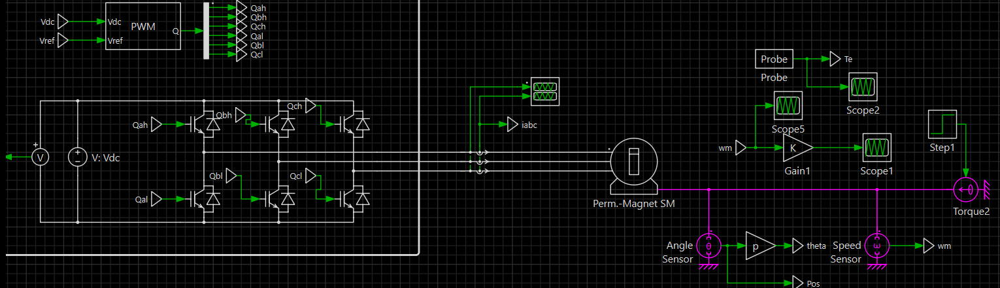
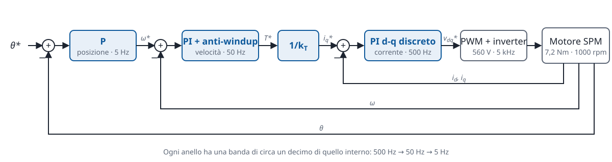
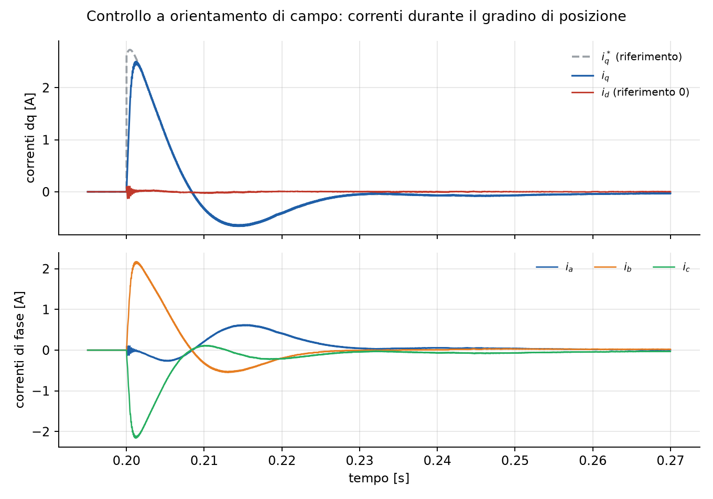
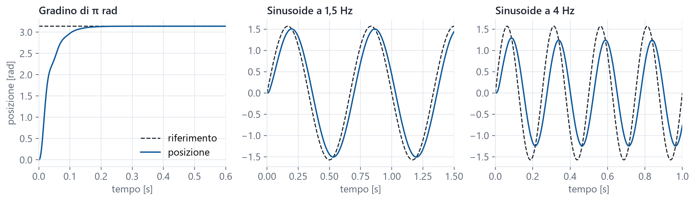
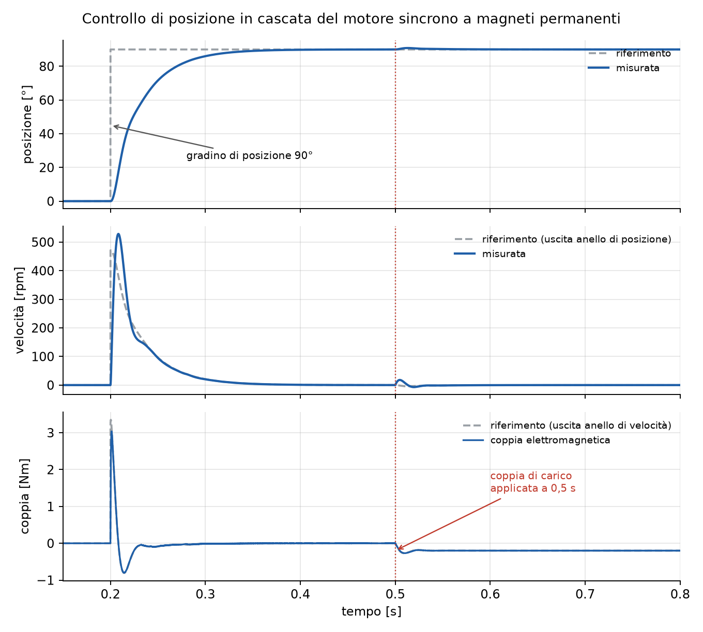

L'obiettivo
Il progetto finale del corso chiedeva di dimensionare, simulare e verificare un azionamento trifase con inverter a due livelli e motore sincrono a magneti permanenti superficiali (SPM). Il punto di partenza era un modello base con il solo controllo di corrente; a ciascuno studente era assegnato un motore commerciale diverso, nel mio caso un PE1R 90 S6 da 7,2 Nm a 1000 rpm.
Il lavoro si è svolto in quattro passi: adattare il modello al motore reale, verificare il controllo di corrente, aggiungere il controllo di coppia, poi quelli di velocità e di posizione.
Dal datasheet al modello
Dal catalogo ho ricavato i parametri elettrici e meccanici della macchina. L'induttanza sincrona si ottiene da quelle di dispersione e di magnetizzazione, mentre il flusso dei magneti si ricava dalla tensione a vuoto: a corrente nulla la tensione di fase dipende solo dai magneti e dalla velocità elettrica. Il risultato è λPM ≈ 0,754 Vs e una costante di coppia kT = 3/2 · p · λPM ≈ 3,39 Nm/A.
Il motore e l'inverter (6 IGBT con diodi di ricircolo, DC-link a 560 V, commutazione a 5 kHz) sono modellati con i componenti elettrici di Simscape Electrical. Il controllo, invece, è tutto a tempo discreto e si attiva una volta per periodo PWM, come su un microcontrollore o un DSP reale.

Architettura di controllo
Gli anelli sono in cascata: ognuno genera il riferimento per quello interno. Per restare stabile e disaccoppiato, ogni anello ha una banda di circa un decimo di quello che lo segue.

Controllo di corrente e di coppia
Il regolatore di corrente fornito era un PI in assi d-q con anti-windup e saturazione alla massima tensione dell'inverter. L'ho verificato con tre prove: inseguimento dei riferimenti a regime, risposta a gradino e tensione a vuoto. Con una banda di 500 Hz la corrente passa dal 10 al 90% del gradino in circa 0,6 ms; riducendo la banda a 150 Hz servono circa 2,5 ms. A corrente nulla e velocità nominale la tensione richiesta è tutta in asse q e vale circa 284 V concatenati, a circa il 2% dai 290 V del catalogo: una conferma che i parametri ricavati dal datasheet sono coerenti.

Il controllo di coppia è un passaggio diretto: in un motore SPM la coppia dipende solo da iq, quindi basta dividere la coppia richiesta per kT, tenendo id = 0. Proprio perché non introduce dinamica, l'anello di coppia ha la stessa banda di quello di corrente.

Controllo di velocità
Per l'anello di velocità il modello meccanico cambia: il motore non ha più la velocità imposta ma riceve una coppia di carico, e la velocità risulta dal bilancio con l'inerzia. Ho progettato un PI con anti-windup e saturazione alla coppia massima del motore, calcolando i guadagni dalla funzione d'anello aperto per avere crossover a 50 Hz e margine di fase di 60°.
Le prove verificano il gradino a 1000 rpm, l'effetto del margine di fase, la velocità massima raggiungibile prima della saturazione e la rigidezza dinamica: quando arriva un gradino di coppia pari a quella nominale la velocità cala per un istante e il PI la riporta al riferimento.

Controllo di posizione
L'anello di velocità chiuso si comporta, visto dall'esterno, come un integratore puro. Per questo per la posizione basta un regolatore proporzionale, con crossover a 5 Hz. L'ho verificato con un gradino di π rad e con riferimenti sinusoidali: a 1,5 Hz la posizione segue bene il riferimento, a 4 Hz, vicino alla banda, si vedono ritardo e calo di ampiezza.

La prova che mostra meglio tutta la cascata al lavoro è un gradino di posizione seguito da un disturbo di carico. L'anello di posizione chiede velocità, quello di velocità chiede coppia, che arriva vicino al limite del motore; la posizione raggiunge il riferimento senza sovraelongazione e, quando sull'albero arriva la coppia di carico, il sistema la compensa in circa 30 ms.

Cosa ho imparato
Questo progetto mi ha fatto vedere da vicino come si costruisce un azionamento reale, dall'elettronica di potenza fino agli anelli di controllo. Ho preso confidenza con il controllo a tempo discreto sincronizzato con il PWM, lo stesso schema che gira sui microcontrollori e sui DSP degli inverter commerciali, e con il metodo per progettare anelli in cascata: scegliere le bande, ricavare i guadagni dal margine di fase e proteggere i regolatori con saturazioni e anti-windup. Ho anche imparato a non fidarmi dei parametri finché non li ho verificati: confrontare la simulazione con i dati di catalogo è stato il modo più semplice per accorgermi se il modello era coerente.